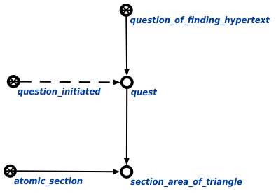

Задачей агента поиска гипертекстовой трансляции является нахождение гипертекстовой трансляции для указанного корневого элемента scn-статьи. Данный агент инициируется при условии появления в памяти вопросной конструкции, соответствующей запросу поиска гипертекстовой трансляции. Единственным аргументом запроса является корневой элемент scn-статьи, имеющий гипертекстовую трансляцию. Пример вопросной конструкции представлен ниже:
